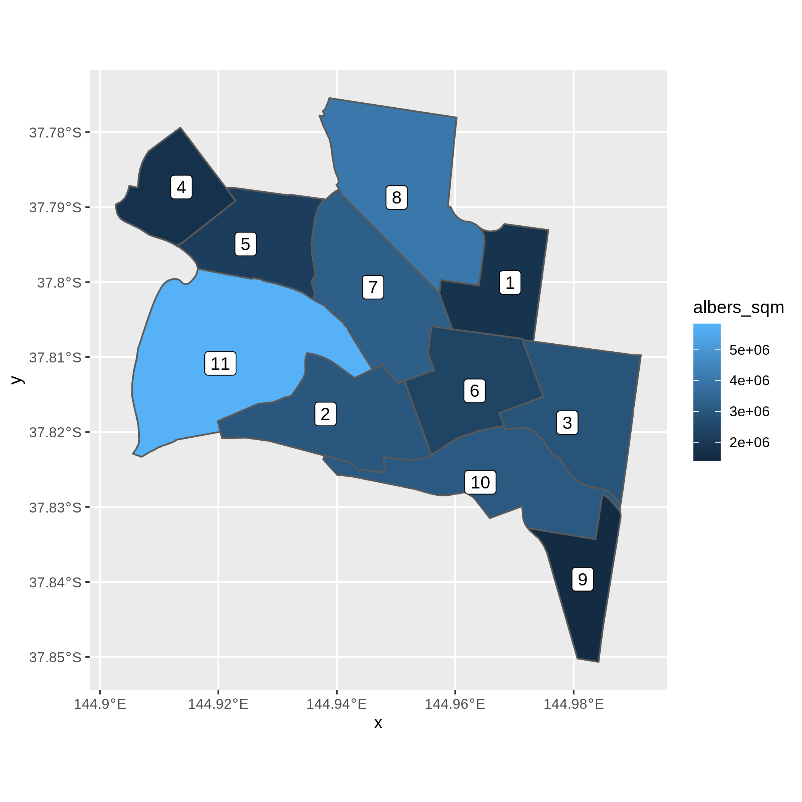
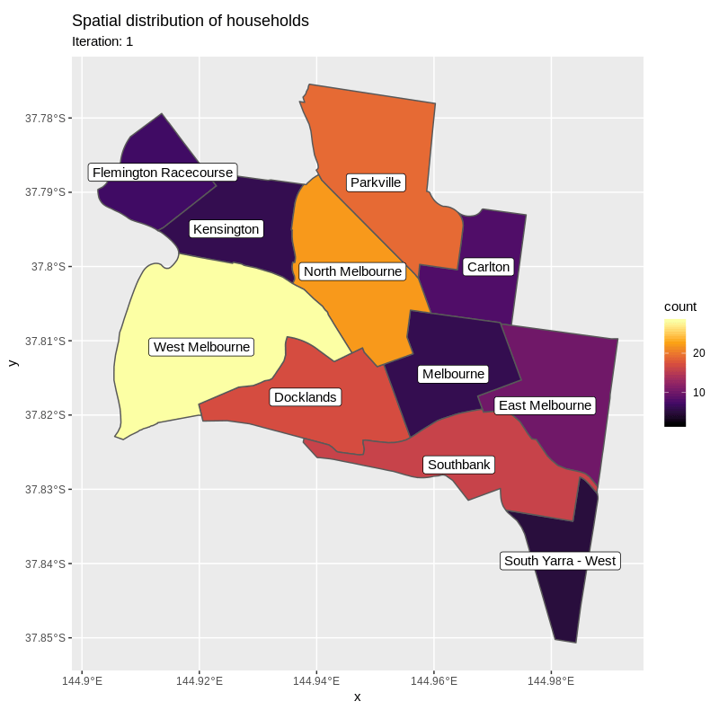
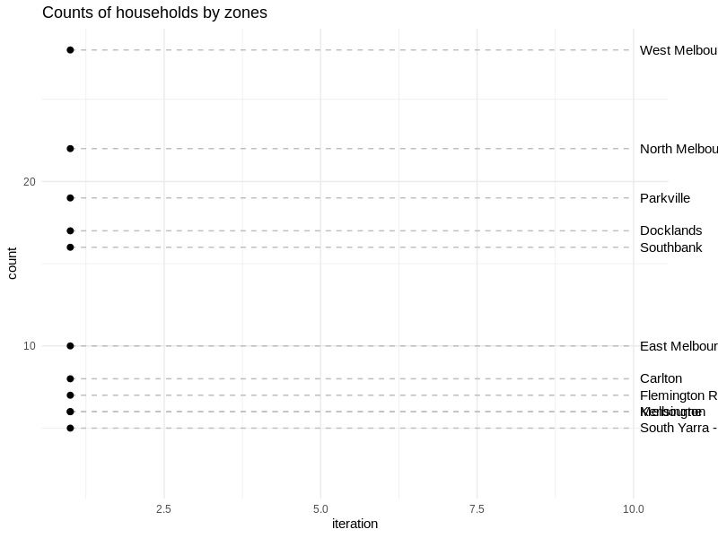

library(dymium)
#> + dymiumCore 0.0.10 Date: 2019-12-02
#> R: 3.6.1
#> OS: Ubuntu 16.04.6 LTS
#> GUI: X11
#>
#>
library(data.table)
library(sf)
#> Linking to GEOS 3.7.1, GDAL 2.2.2, PROJ 4.9.2
library(ggplot2)
library(gganimate)
#>
#> Attaching package: 'gganimate'
#> The following object is masked from 'package:dymiumCore':
#>
#> Transition
library(DiagrammeR)
set.seed(728)Residential mobility or household relocation plays an important role in determining the urban traffic and the real estate market condition. In this example, we create a simple residential mobility model which comprises of two stages. The first stage is for households to decide whether to move from their current residence. If they decide to move then they will go onto the second stage otherwise they will remain where they are. The second stage is for the moving households to decide where they will relocate to.
Flowchart of the processes in the simple residential mobility model
This example requires the reader to know the grammar of data operations of the data.table package as it is quite different from the base R data.frame and also knows the R6 package to fully utilise the base classes of dymiumCore.
To make this model simple, the following assumptions were made.
Here is the map of all the zones in this example.
ggplot(toy_zones) +
geom_sf(aes(fill = albers_sqm)) +
geom_sf_label(aes(label = rownames(toy_zones)))
#> Warning in st_point_on_surface.sfc(sf::st_zm(x)): st_point_on_surface may not
#> give correct results for longitude/latitude data
Here is the list of queen contiguity of the zones.
st_queen <- function(a, b = a) st_relate(a, b, pattern = "F***T****", sparse = TRUE)
nb_list <- st_queen(toy_zones)
#> although coordinates are longitude/latitude, st_relate_pattern assumes that they are planarSince nb_list refers to the zones by their row numbers as listed in the toy_zones, we need to replace those row numbers with their respective zid.
# make the returned object from `st_queen` into a list by removing its class and attributes.
class(nb_list) <- NULL
attributes(nb_list) <- NULL
# name all elements in the list by their associated `zid`.
names(nb_list) <- toy_zones$zid
# go inside each element of the list to replace row numbers with their `zid` in `toy_zones`.
nb_list <-
lapply(nb_list, function(x) {
as.integer(toy_zones$zid[x])
})
nb_list
#> $`206041117`
#> [1] 206041119 206041122 206041123 206041124
#>
#> $`206041118`
#> [1] 206041122 206041123 206041126 206041127
#>
#> $`206041119`
#> [1] 206041117 206041122 206041126
#>
#> $`206041120`
#> [1] 206041121
#>
#> $`206041121`
#> [1] 206041120 206041123 206041127
#>
#> $`206041122`
#> [1] 206041117 206041118 206041119 206041123 206041126
#>
#> $`206041123`
#> [1] 206041117 206041118 206041121 206041122 206041124 206041127
#>
#> $`206041124`
#> [1] 206041117 206041123
#>
#> $`206041125`
#> [1] 206041126
#>
#> $`206041126`
#> [1] 206041118 206041119 206041122 206041125
#>
#> $`206041127`
#> [1] 206041118 206041121 206041123The provided toy datasets from the dymiumCore package are used in this example. We are going to create only Household agents.
# create a emptied World object to store agents and models
world <- World$new()
world$add(x = Household$new(new_toy_households, id_col = "hid"), name = "Household")
#> [22:12:19] WARN dymiumCore world$add: The given `name` will be ignored since the object in x is of a Dymium class object. The classname of the object will be used as its name.
#> [22:12:19] INFO dymiumCore world$add: Adding an Entity object 'Household' to Entities.# calling the `world` object
world
#> There are 1 items in self$Cont.
#> Class: Household
#> Inheritance: Household <- Agent <- Entity <- Generic <- R6
#> Number_of_entities: 144
#> Number_of_removed_entities: 0
#> Data[rows, cols]: attrs[144, 3]You can see that there is only one entity inside the world object which Household agents. The Household object contains attributes and methods of its agents and can be accessed by calling the get() method of world
For example
world$get("Household")
#> Class: Household
#> Inheritance: Household <- Agent <- Entity <- Generic <- R6
#> Number_of_entities: 144
#> Number_of_removed_entities: 0
#> Data[rows, cols]: attrs[144, 3]A reference to any objects in world can be created by assigning the result from world$get() to a variable.
Hh <- world$get("Household")
Hh
#> Class: Household
#> Inheritance: Household <- Agent <- Entity <- Generic <- R6
#> Number_of_entities: 144
#> Number_of_removed_entities: 0
#> Data[rows, cols]: attrs[144, 3]To access the attributes of Individual agents you may use the get_data() method as following
First we need to create a list that contains the assumed transition probabilities.
As you can see, we have created a named list that contains two elements which are ‘yes’ and ‘no’ with numeric values that represent the associated probabilities to the actions. All households have 5% chance that they would move and 95% chance that they would remain where they are.
The next step is to store the move_rate model and the list that contains the indices of neighboring zones, nb_list, in side the world object as following.
world$add(x = move_rate, name = "move_rate")
#> [22:12:19] INFO dymiumCore world$add: Adding a Model object 'move_rate' to Models.
world$add(x = nb_list, name = "nb_zones")
#> [22:12:19] INFO dymiumCore world$add: Adding a Model object 'nb_zones' to Models.
# it can be accessed using the get method as well.
world$get("move_rate")
#> $yes
#> [1] 0.05
#>
#> $no
#> [1] 0.95
# the safer option is to use `get_model` method which only look for keys that contain model objects while the `get` method looks at all keys stored.
# world$get_model("move_rate")TransitionClassification allows a probabilistic model such as the one we have just created, move_rate, to be used for simulation (Monte Carlo).
The steps of the residential mobility event are inside the following function.
event_ltmobility_residentialRelocation <- function(world) {
# Get the household object from `world`
Hh <- world$get("Household")
# simulate the first stage - move or not move? ----
TransMove <- TransitionClassification$new(x = Hh, model = world$get("move_rate")$get())
# get_result returns a data.table with two columns `id` and `response`.
moving_household_ids <- TransMove$get_result()[response == "yes", id]
# simulate the second stage - where to? ----
if (length(moving_household_ids) > 0) {
# create a choiceset for each moving household
# get only `hid` and `zid` of the moving households by creating a copy of
# their attribute data.
mover_choicemodel <- Hh$get_data(ids = moving_household_ids)[, c("hid", "zid")]
# create emptied columns to store choicesets and their probabilities
mover_choicemodel[, `:=`(choices = list(), probs = list())]
# get the list of neighboring zones. Note that the second `$get()` is required
# to get the list instead of not a model object.
nb_zones <- world$get("nb_zones")$get()
for (i in 1:nrow(mover_choicemodel)) {
self_zid <- mover_choicemodel[i, zid] # get `zid` in row `i`
choices <- nb_zones[[self_zid]] # get the neighboring zones
probs <- rep(x = 1 / length(choices), times = length(choices)) # assign equal probabilities to all choices
set(mover_choicemodel, i = i, j = "choices", value = choices)
set(mover_choicemodel, i = i, j = "probs", value = probs)
}
# remove `zid` since the TransitionClassification assumes that all columns that
# are not named as `probs` and `choices` are supposed to be used as matching columns
mover_choicemodel[, zid := NULL]
# simulate location selection
TransWhereTo <- TransitionClassification$new(
x = Hh,
model = mover_choicemodel,
targeted_agents = mover_choicemodel[, hid],
model_by_id = TRUE
)$update_agents(attr = "zid")
}
return(world)
}To simulate the residential mobility event for multiple iterations we can simply use a flow control statement such as a ‘for’ loop. The below chunk of codes run the residential mobility event that we have just created for 10 iterations and at the end of each iteration the total number of households in each zone will be stored inside count_ls which will be indexed by the iteration number.
start_iter <- 1
end_iter <- 10
count_ls <- list()
for (i in start_iter:end_iter) {
world$start_iter(i, unit = "year") %>%
event_ltmobility_residentialRelocation(.)
# record the count of households by zone in each iteration
count_ls[[i]] <-
world$get("Household")$get_data()[, .(count = .N, iteration = i), by = zid]
}
#> [22:12:19] INFO dymiumCore world$start_iter: Starting year: 1
#> [22:12:19] INFO dymiumCore world$start_iter: Starting year: 2
#> [22:12:19] INFO dymiumCore world$start_iter: Starting year: 3
#> [22:12:19] INFO dymiumCore world$start_iter: Starting year: 4
#> [22:12:19] INFO dymiumCore world$start_iter: Starting year: 5
#> [22:12:19] INFO dymiumCore world$start_iter: Starting year: 6
#> [22:12:19] INFO dymiumCore world$start_iter: Starting year: 7
#> [22:12:19] INFO dymiumCore world$start_iter: Starting year: 8
#> [22:12:19] INFO dymiumCore world$start_iter: Starting year: 9
#> [22:12:19] INFO dymiumCore world$start_iter: Starting year: 10To visualise the spatial dynamic of households we use the gganimate and ggplot packages.
As a spatial plot..
anim <-
ggplot(count) +
geom_sf(aes(fill = count)) +
geom_sf_label(aes(label = sa2_name11)) +
# Here come the gganimate specific bits
labs(title = "Spatial distribution of households",
subtitle = "Iteration: {frame_time}") +
scale_fill_viridis_c(option = "B") +
transition_time(iteration)
animate(anim, width = 800, height = 800, res = 100)
#> Warning in st_point_on_surface.sfc(sf::st_zm(x)): st_point_on_surface may not
#> give correct results for longitude/latitude data
#> Warning in st_point_on_surface.sfc(sf::st_zm(x)): st_point_on_surface may not
#> give correct results for longitude/latitude data
#> Warning in st_point_on_surface.sfc(sf::st_zm(x)): st_point_on_surface may not
#> give correct results for longitude/latitude data
#> Warning in st_point_on_surface.sfc(sf::st_zm(x)): st_point_on_surface may not
#> give correct results for longitude/latitude data
#> Warning in st_point_on_surface.sfc(sf::st_zm(x)): st_point_on_surface may not
#> give correct results for longitude/latitude data
#> Warning in st_point_on_surface.sfc(sf::st_zm(x)): st_point_on_surface may not
#> give correct results for longitude/latitude data
#> Warning in st_point_on_surface.sfc(sf::st_zm(x)): st_point_on_surface may not
#> give correct results for longitude/latitude data
#> Warning in st_point_on_surface.sfc(sf::st_zm(x)): st_point_on_surface may not
#> give correct results for longitude/latitude data
#> Warning in st_point_on_surface.sfc(sf::st_zm(x)): st_point_on_surface may not
#> give correct results for longitude/latitude data
#> Warning in st_point_on_surface.sfc(sf::st_zm(x)): st_point_on_surface may not
#> give correct results for longitude/latitude data
As a time series plot..
anim <-
ggplot(count, aes(iteration, count, group = sa2_name11)) +
geom_line() +
geom_segment(aes(xend = 10, yend = count), linetype = 2, colour = 'grey') +
geom_point(size = 2) +
geom_text(aes(x = 10.1, label = sa2_name11), hjust = 0) +
coord_cartesian(clip = 'off') +
transition_reveal(iteration) +
theme_minimal() +
labs(title = "Counts of households by zones") +
theme(plot.margin = margin(5.5, 40, 5.5, 5.5))
animate(anim, width = 800, height = 600, res = 100)